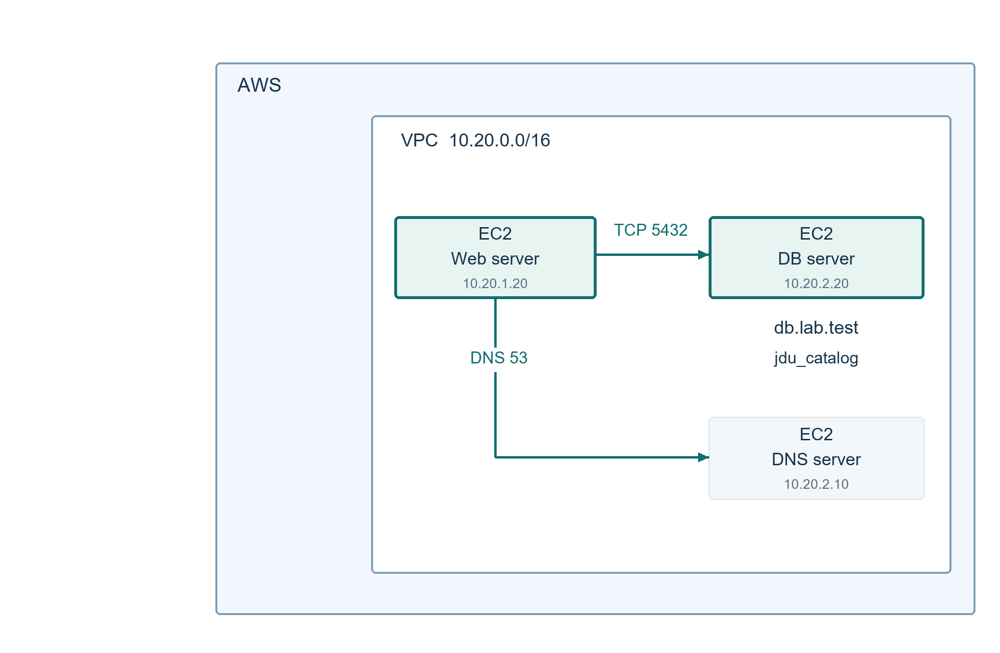

M3 PostgreSQL ga autentifikatsiya bilan ulanish (9)
Mashqlar P0–P6 · Topshiriqlar M0–M5
Mos topshiriq: P4.
Tayyor holat talablari
Boshlashdan oldin baholash sahifasida M2 uchun to‘liq ball olinganini tekshiring.
P4 dagi PostgreSQL da quyida ko‘rsatilgan topshiriq ma’lumotlar bazasi va ikkita rolni yarating. Ilova jadvallari M4 da yaratiladi.
- DB server (P4.2-P4.6). Baza va rollarni yarating. Tegishli bazaga ko‘rsatilgan rollar bilan faqat Web serverdan (
10.20.1.20/32) ulanishga ruxsat bering. P4 dagidek SCRAM ishlating. - Web server (P4.7-P4.8). Oddiy ish rejimi roli bilan
db.lab.testga ulanib, SELECT bajarilishini tekshiring. Mavjud parolni P4.8 dagi usul bilanmissionprofili uchun saqlang.
Topshiriq diagrammasi

| Sozlama | Qiymat |
|---|---|
| Baza nomi | jdu_catalog |
| Sozlash roli | catalog_setup |
| Oddiy ish rejimi roli | catalog_app |
Baholash mezonlari
Har bir mezon 1 ball.
| № | Shart |
|---|---|
| 1 | PostgreSQL 16/main ishlaydi (active). |
| 2 | 16/main sozlamasi, standart data directory va OS postgres socket/peer to‘g‘ri. |
| 3 | PostgreSQL 10.20.2.20:5432 da tinglaydi. |
| 4 | DB va public schema egasi tegishli setup role. |
| 5 | Runtime LOGIN; superuser/CREATEDB/CREATEROLE/REPLICATION/BYPASSRLS va huquq oshiruvchi membership yo‘q. Setup qurishda LOGIN yoki tugagach NOLOGIN. |
| 6 | HBA faqat ko‘rsatilgan DB/role va Web /32 uchun SCRAM ga ruxsat beradi; keng ruxsat yo‘q. |
| 7 | Web dan yangi autentifikatsiyali SELECT kerakli DB/user/qiymatni qaytaradi; P IP bilan, M odatiy DNS orqali. |
| 8 | To‘g‘ri parol ishlagan ayni tekshiruvda bitta noto‘g‘ri parol aniq rad etiladi. |
| 9 | Web dan postgres role, begona DB va boshqa profile taqiqlangan; hali yaratilmagan practice DB majburiy emas. |
Tekshirish va yuborish
- Baholash sahifasini oching va M3 ni tanlang.
- Tanlangan topshiriq tekshiruvini boshlang.
- Tekshiruv tugagach, bajarilgan mezonlar soni va har bir natija chiqadi. «Tuzating» deb belgilangan sozlamani to‘g‘rilab, yana tekshiring. «Tekshirilmagan» band natijasi aniqlanmagan. Ballarni topshiriqlar ro‘yxatidan ko‘ring.